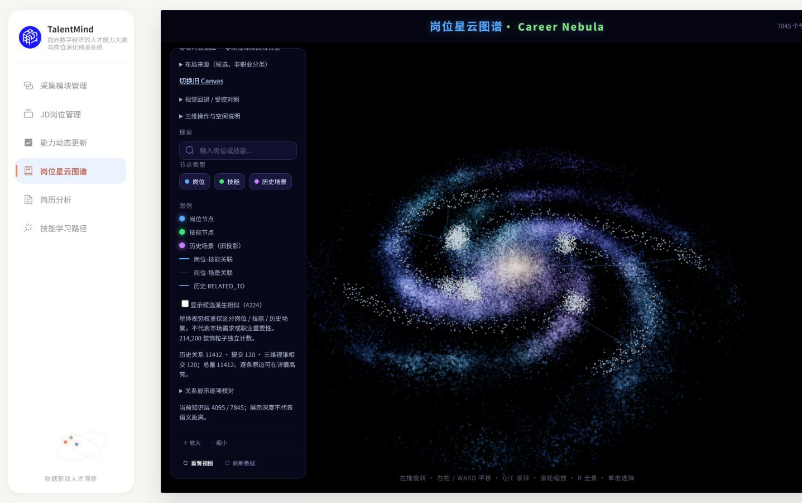
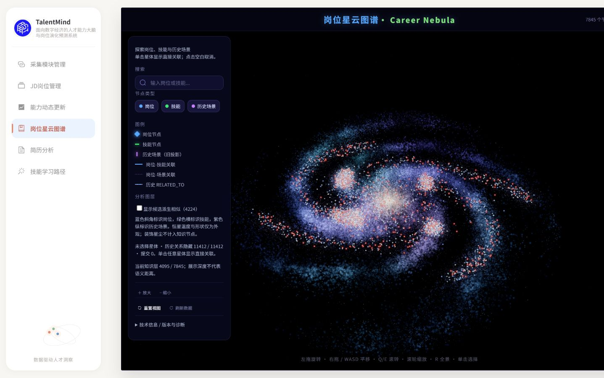
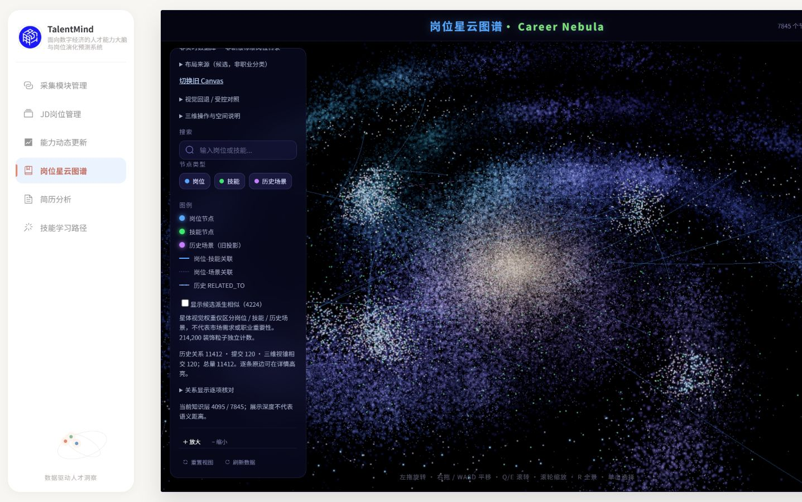
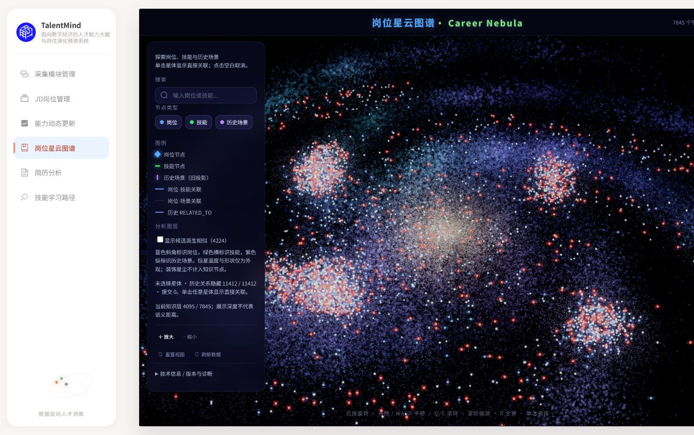
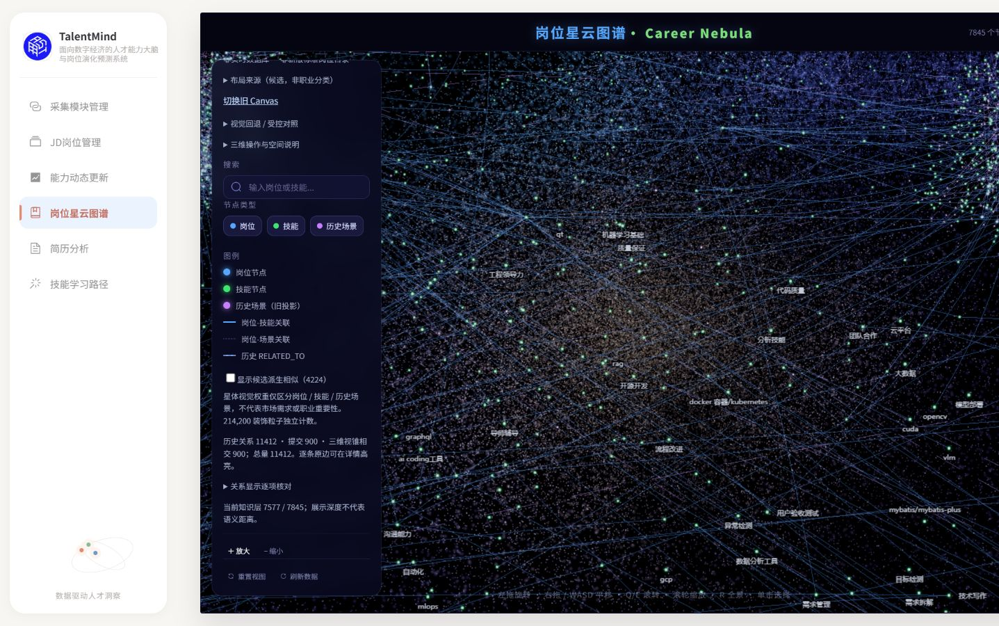
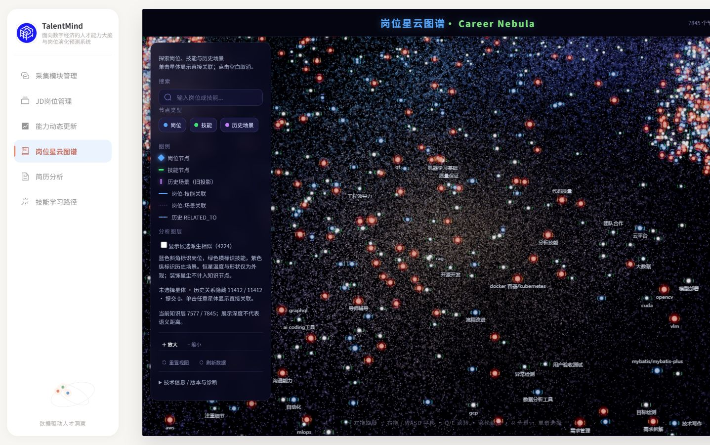
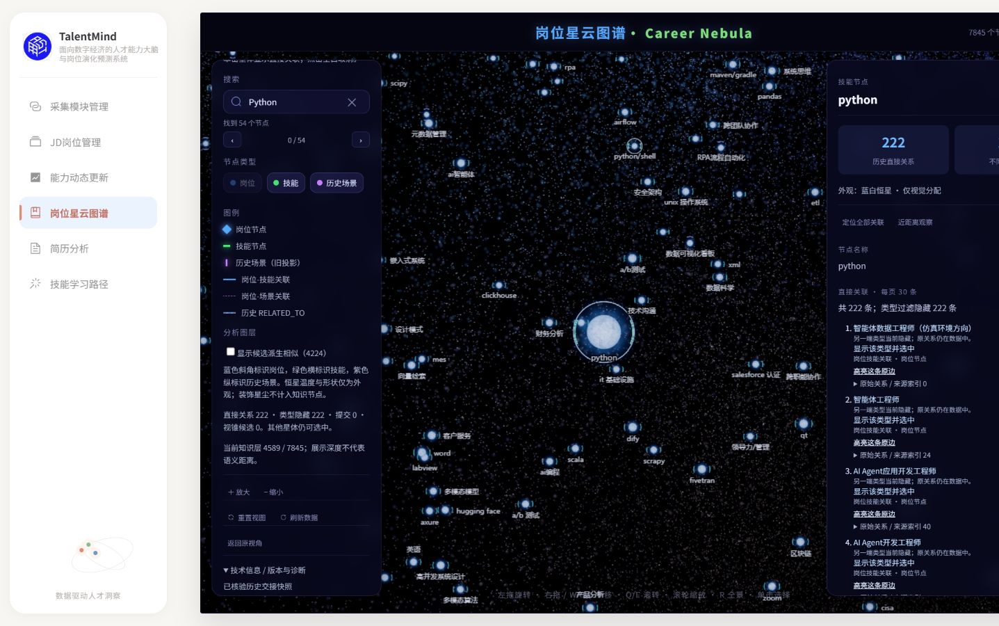
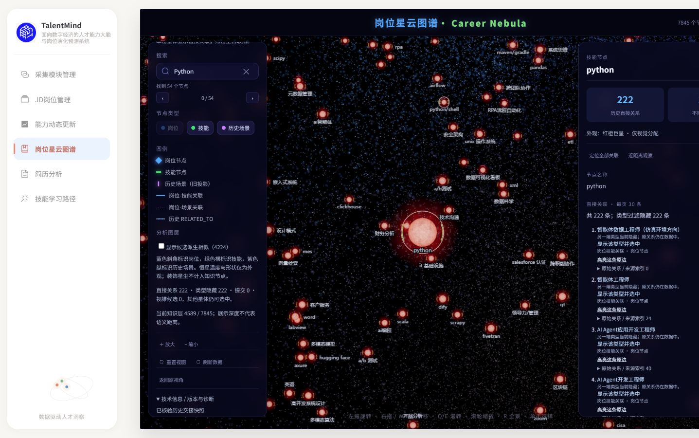
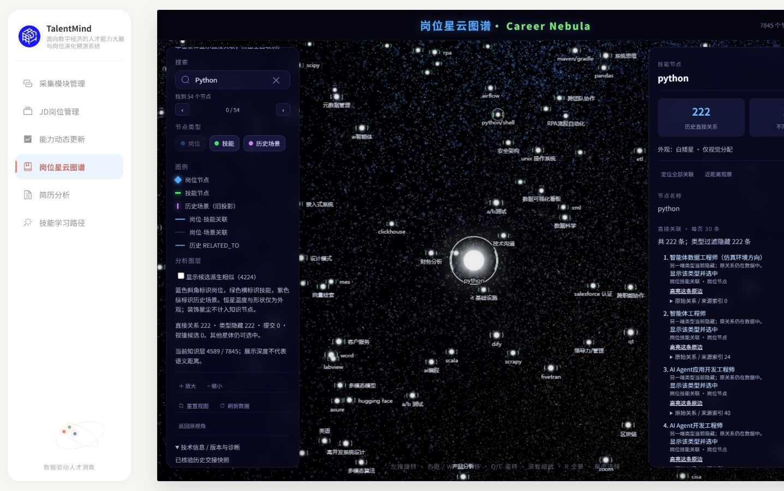
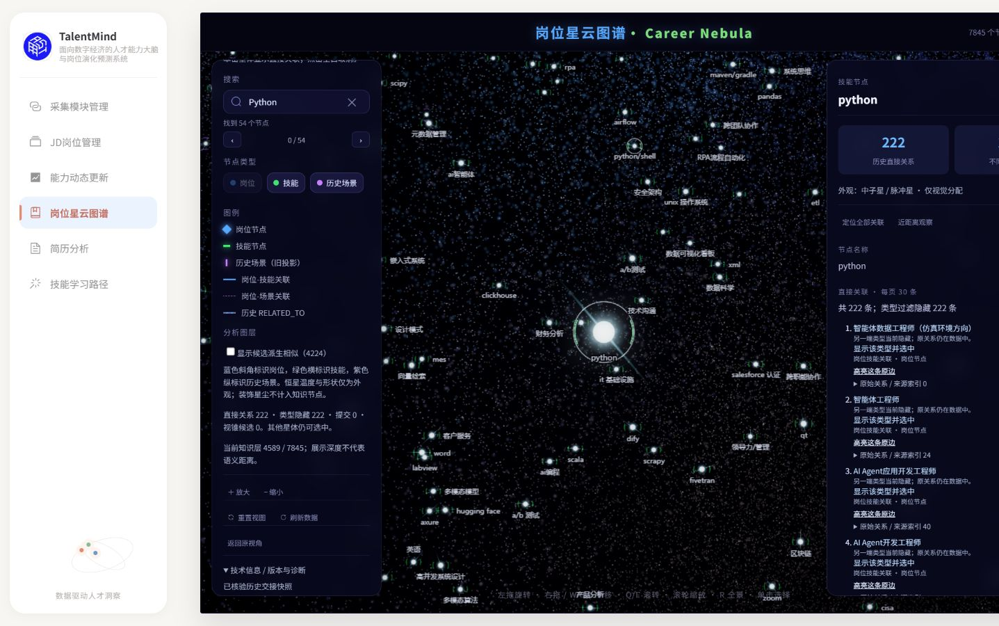

正式Vue /graph，同一历史7845节点 / 11412关系；同一标签1600×900、DPR约1、冻结时钟，reset后0/7/15次缩放。原坐标与业务语义保持。默认关系线120/120/900 → 0/0/0；不能将该负载变化解释为shader性能提升。






通过技术面板显式切换整体预设；主动隐藏岗位类型后无关系线遮挡。原222条历史关系保留并按类型隐藏。外观不绑定职业重要性或招聘事实。



